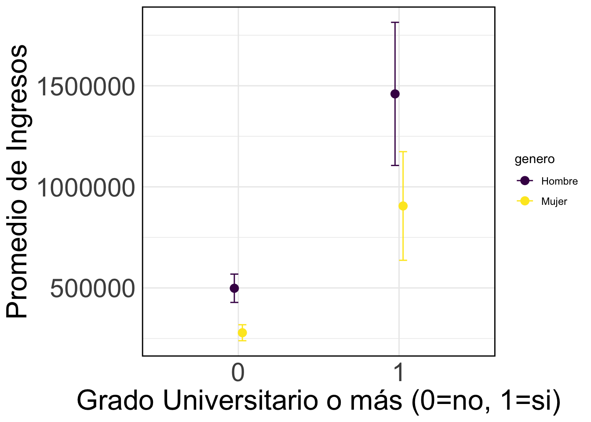

library("tidyverse")
url <- "https://raw.githubusercontent.com/mebucca/dar_soc4001/master/data/sample_casen2017.csv"
casen2017 <- read.csv(url) %>% as_tibble() %>%
mutate(ingreso = yautcor) %>%
select(region,sexo,edad,educ,ingreso) %>%
mutate(univ = case_when(educ==11 | educ==12 & edad > 27 ~ 1, educ < 11 & edad > 27 ~ 0),
genero = case_when(sexo==1 ~ "Hombre", sexo==2 ~ "Mujer"))SOL114 Análisis de Datos II
Problema
Datos:
La brecha de ingresos entre hombres y mujeres (a favor de los primeros) en un hecho bien documentado. La siguiente tabla muestra el promedio de ingresos autónomos para hombres y mujeres estimado en una submuestra de la Encuesta CASEN 2017.
Promedio de ingresos por género# A tibble: 2 × 2
genero promedio_ingreso_genero
<chr> <dbl>
1 Hombre 588281
2 Mujer 368070Varias teorías complementarias se han propuesto para explicar la brecha salarial de género. Una teoría – la teoría del Capital Humano, – argumenta que esta brecha no se debe intrínsecamente al género, sino más bien a las disparidades en los logros educativos entre hombres y mujeres. Esta teoría sugiere que, ya que un mayor nivel educativo generalmente conduce a ingresos más altos, la brecha salarial observada podría ser en gran parte el resultado de diferencias promedio en la educación entre géneros. De acuerdo con esta perspectiva, se espera que las diferencias salariales entre hombres y mujeres que han alcanzado niveles educativos similares sean insignificantes o, al menos, menores que la brecha observada a nivel general.
Referencia bibliográfica: Blau, Francine D. y Lawrence M. Kahn. (2017). “The Gender Wage Gap: Extent, Trends, and Explanations”. En Journal of Economic Literature.
En la linea de este argumento, los datos de la submuestra de la Encuesta CASEN 2017 revelan lo siguiente:
Porcentaje de personas con grado universitario o mayor por género# A tibble: 2 × 2
genero porcentaje_universidad
<chr> <dbl>
1 Hombre 0.14
2 Mujer 0.12Promedio de ingresos para personas con y sin grado universitario# A tibble: 2 × 2
univ promedio_ingresos_univ
<dbl> <dbl>
1 0 403133
2 1 1197177Usando la submuestra de la Encuesta CASEN 2017 obtenemos las siguientes estimaciones que nos permiten testear algunas de las afirmaciones de la Teoría del Capital Humano:
Promedio y Desviación estandar de Ingresos por género y grado universitario# A tibble: 4 × 5
# Groups: genero [2]
genero univ promedio_ingresos s n
<chr> <dbl> <dbl> <dbl> <int>
1 Hombre 0 498284 553750 240
2 Hombre 1 1459794 1142054 40
3 Mujer 0 278344 272838 183
4 Mujer 1 905380 822500 36Gráficamente,

Las lineas verticales representan intervalos de confianza al 95%.
Instrucciones:
Estima la brecha de ingresos entre hombres y mujeres para cada nivel de logro educacional. Si \(X\) respresenta la variable ingresos, podemos expresar estas cantidades formalmente como:
Brecha ingresos por genero entre personas sin grado universitario: \(\mathbb{E}(X \mid \text{Hombre, No Universitario}) - \mathbb{E}(X \mid \text{Mujer, No Universitaria})\)
Brecha ingresos por genero entre personas con grado universitario: \(\mathbb{E}(X \mid \text{Hombre, Universitario}) - \mathbb{E}(X \mid \text{Mujer, Universitaria})\)
======= No Universitarios ======= # A tibble: 1 × 3
Hombre Mujer brecha
<dbl> <dbl> <dbl>
1 498284. 278344. 219940.======== Universitarios ========= # A tibble: 1 × 3
Hombre Mujer brecha
<dbl> <dbl> <dbl>
1 1459794. 905380. 554413.- Usando un nivel de significación del 5%, testea estadísticamente la siguiente hipótesis: “El ingreso esperado de los hombres con educación universitaria es mayor que el de las mujeres con educación universitaria”.
<<<<<<< HEAD
=======
>>>>>>> master
<<<<<<< HEAD
=======
>>>>>>> master
# Datos filtrados para universitarios
datos_univ <- casen2017 %>% filter(univ == 1)
# Calcular medias y desviaciones estándar
media_hombres_univ <- mean(datos_univ$ingreso[datos_univ$genero == "Hombre"], na.rm = TRUE)
media_mujeres_univ <- mean(datos_univ$ingreso[datos_univ$genero == "Mujer"], na.rm = TRUE)
sd_hombres_univ <- sd(datos_univ$ingreso[datos_univ$genero == "Hombre"], na.rm = TRUE)
sd_mujeres_univ <- sd(datos_univ$ingreso[datos_univ$genero == "Mujer"], na.rm = TRUE)
n_hombres_univ <- sum(!is.na(datos_univ$ingreso[datos_univ$genero == "Hombre"]))
n_mujeres_univ <- sum(!is.na(datos_univ$ingreso[datos_univ$genero == "Mujer"]))
# Diferencia de medias y error estándar
dif_medias_univ <- media_hombres_univ - media_mujeres_univ
se_dif_medias_univ <- sqrt((sd_hombres_univ^2 / n_hombres_univ) + (sd_mujeres_univ^2 / n_mujeres_univ))
# Imprimir resultados
print(c("Diferencia de medias" = dif_medias_univ, "Error estándar" = se_dif_medias_univ))Diferencia de medias Error estándar
554413.3 226713.6 # z-test
z_hat = (dif_medias_univ - 0)/se_dif_medias_univ
valor_p = 1 - pnorm(z_hat)
print(c("z-gorro" = z_hat, "Valor-p" = valor_p)) z-gorro Valor-p
2.445434727 0.007233882 - Usando un nivel de significación del 5%, testea estadísticamente la siguiente hipótesis: “La brecha de ingreso por género es distinta dependiendo si las personas tienen o no educación universitaria”.
Pista, la hipótesis nula es la siguiente:
\(H_0: \mathbb{E}(X \mid \text{Hombre, Universitario}) - \mathbb{E}(X \mid \text{Mujer, Universitaria}) = \mathbb{E}(X \mid \text{Hombre, No Universitario}) - \mathbb{E}(X \mid \text{Mujer, No Universitaria})\)
<<<<<<< HEAD
=======
>>>>>>> master
<<<<<<< HEAD
=======
>>>>>>> master
# Datos filtrados para universitarios
datos_nouniv <- casen2017 %>% filter(univ == 0)
# Calcular medias y desviaciones estándar
media_hombres_nouniv <- mean(datos_nouniv$ingreso[datos_nouniv$genero == "Hombre"], na.rm = TRUE)
media_mujeres_nouniv <- mean(datos_nouniv$ingreso[datos_nouniv$genero == "Mujer"], na.rm = TRUE)
sd_hombres_nouniv <- sd(datos_nouniv$ingreso[datos_nouniv$genero == "Hombre"], na.rm = TRUE)
sd_mujeres_nouniv <- sd(datos_nouniv$ingreso[datos_nouniv$genero == "Mujer"], na.rm = TRUE)
n_hombres_nouniv <- sum(!is.na(datos_nouniv$ingreso[datos_nouniv$genero == "Hombre"]))
n_mujeres_nouniv <- sum(!is.na(datos_nouniv$ingreso[datos_nouniv$genero == "Mujer"]))
# Cálculo de la diferencia de diferencias
dif_diferencias <- brecha_univ$brecha - brecha_no_univ$brecha
se_dif_diferencias <- sqrt((sd_hombres_univ^2 / n_hombres_univ) + (sd_mujeres_univ^2 / n_mujeres_univ) +
(sd_hombres_nouniv^2 / n_hombres_nouniv) + (sd_mujeres_nouniv^2 / n_mujeres_nouniv))
# Imprimir resultados
print(c("Diferencia de diferencias" = dif_diferencias, "Error estándar" = se_dif_diferencias))Diferencia de diferencias Error estándar
334473.3 230398.5 # z-test
z_hat = (dif_diferencias - 0)/se_dif_diferencias
valor_p = 2*(1 - pnorm(z_hat))
print(c("z-gorro" = z_hat, "Valor-p" = valor_p)) z-gorro Valor-p
1.4517162 0.1465805 - En base a los resultados obtenidos, comenta la validez de las predicciones derivadas de la Teoría del Capital Humano.
El análisis estadístico revela que la diferencia en los ingresos esperados entre hombres y mujeres con educación universitaria es estadísticamente significativa (valor-p = 0.007233882). Este hallazgo sugiere que, a pesar de alcanzar niveles educativos similares, persiste una brecha de ingresos favorable a los hombres. Esta persistencia desafía parcialmente la Teoría del Capital Humano, al sugerir la influencia de factores adicionales más allá del logro educativo en la disparidad salarial. Además, los resultados muestran que esta brecha salarial se manifiesta tanto en individuos con grado universitario como en aquellos sin él. La incapacidad para rechazar la hipótesis de que estas brechas varíen significativamente en magnitud refuerza aún más las dudas sobre la Teoría del Capital Humano, apuntando a la necesidad de considerar otros elementos que puedan estar contribuyendo a generar diferencias salariales por género.